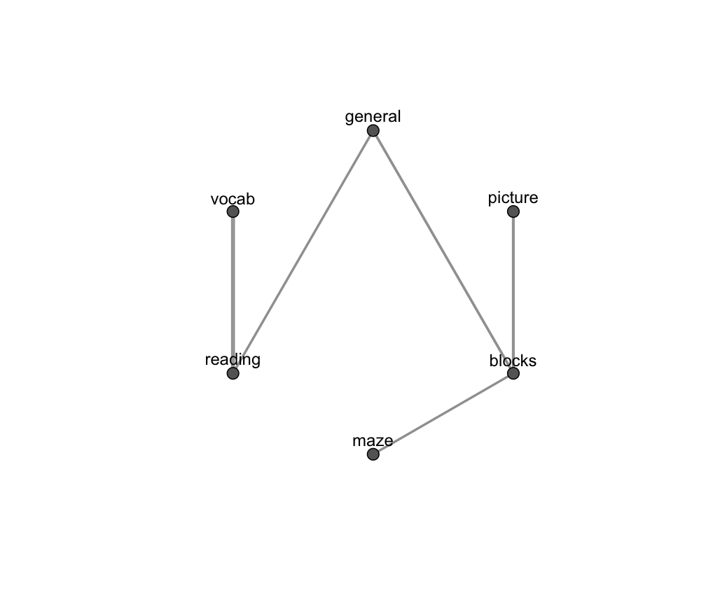

penalty.RdCollection of penalty functions employed in the structural-EM algorithm and penalized maximum likelihood estimation for graph structure search.
The choice of the penalty function is via argument penalty in the functions searchGGM and mixGGM. Possible options are "bic" (default), "ebic", "erdos", and "power". Functions "ebic", "erdos", and "power" depend also on a hyperparameter beta which can be set using the corresponding argument in searchGGM and mixGGM.
Let denote with E the number of non-zero entries in the adjacency matrix corresponding to the graph structure of a covariance/concentration graph model (i.e. the number of edges); N and V denote number of observations and number of variables (or nodes). The above options correspond to the following penalty functions:
"bic" -- A BIC-like penalty term is placed on the structure of a graph. This penalty is given by:
$$0.5 E \log N$$
The hyperparameter beta is not used.
"ebic" -- An EBIC-like penalty term for graphical models is placed on the structure of a graph. This penalty is given by:
$$0.5 E \log N + 2\beta E \log V$$
For this penalty function, beta is a value in the range [0,1]. Default is beta = 1, encouraging sparser models. Clearly the case beta = 0 corresponds to "bic".
"erdos" -- Let denote by T the number of all possible edges in a graph, i.e. \(T = {V\choose 2}\). The penalty function is given by:
$$-E\log \beta - (T-E)\log(1 - \beta)$$
For this penalty function, beta is a value in the range (0,1). For small values of beta the penalization tends to favor situations where the graph decomposes into disjoint blocks. Default is beta = log(V)/T, a value for which the expected number of arcs is equal to log(V) and such that the graph will almost surely have disconnected components.
"power" -- Let denote with d_j the degree of node j, i. e. the number of nodes connected to it. This penalty function is defined as:
$$\beta \sum_j^V \log(d_j + 1)$$
In this case, beta is a positive value. Default is beta = log(NV), a value which place the penalty term on a similar magnitude of "bic" and "ebic", but denser graphs will tend to be less penalized.
An user-defined penalty function can be also provided in input of argument penalty in the functions searchGGM and mixGGM. In this case, the penalty must be an object of class "function" and have as argument graph, like for example "f <- function(graph, beta)"; see "Examples".
See also searchGGM and mixGGM for some examples.
Fop, M., Murphy, T.B., and Scrucca, L. (2018). Model-based clustering with sparse covariance matrices. Statistics and Computing. To appear.
# fit concentration graph model with power law penalty data(ability.cov) N <- ability.cov$n.obs mod1 <- searchGGM(S = ability.cov$cov, N = ability.cov$n.obs, model = "concentration", penalty = "power", beta = 2*log(N)) mod1#> #> Gaussian concentration graph model #> for conditional independence #> ======================================= #> N. dependence parameters: 5 #> Log-likelihood: -1408.95 #> Penalized log-likelihood: -1462.39 #> Penalty: power #> Search: step-forwplot(mod1)# NOT RUN { # two disconnected blocks of correlated variables library(MASS) V <- 10 N <- 500 mu <- rep(0, V) sigma <- matrix(0.9, V,V) diag(sigma) <- 1 x <- cbind( MASS::mvrnorm(N, mu, sigma), MASS::mvrnorm(N, mu, sigma) ) # # fit a covariance graph with erdos penalty mod2 <- searchGGM(x, model = "covariance", penalty = "erdos") plot(mod2, "adjacency") # user defined penalty function data(iris) x <- iris[,-5] N <- nrow(x) V <- ncol(x) ref <- matrix(0, V, V) # # penalize graphs different from a reference graph structure myPenalty <- function(graph, beta) { beta * sum( abs(graph - ref) ) } # mod3 <- mixGGM(x, K = 3, model = "covariance", penalty = myPenalty, beta = 2*V*log(N)) plot(mod3) # }